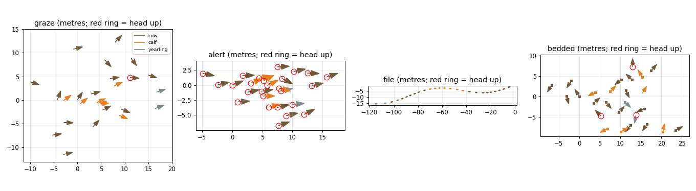
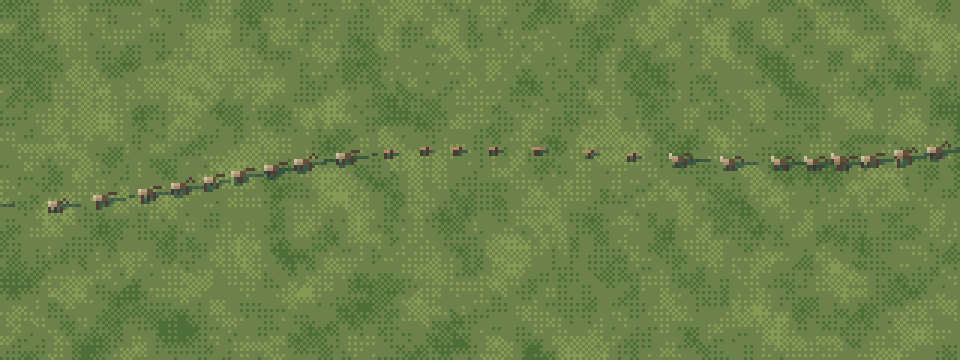
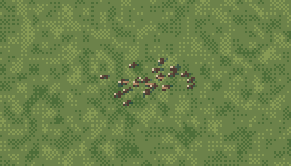
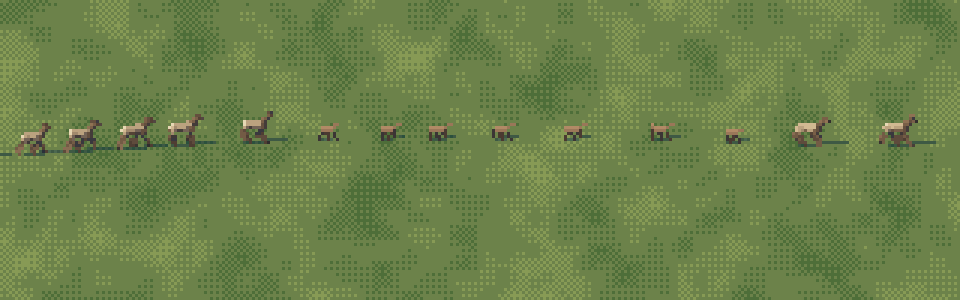
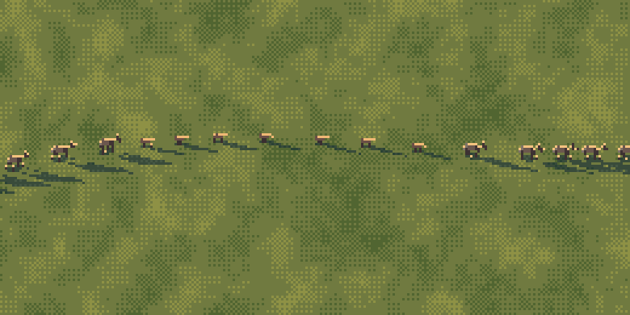
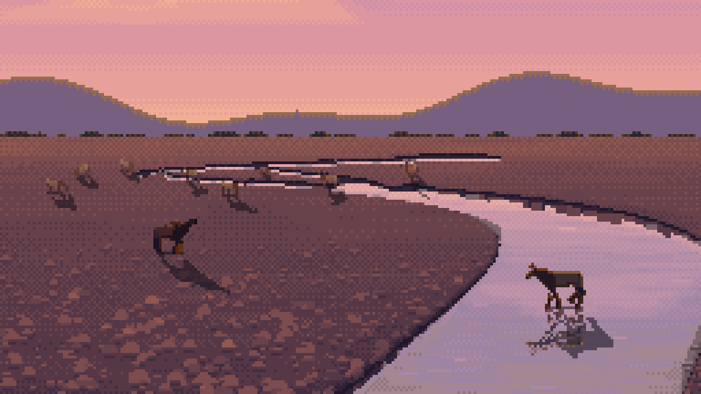
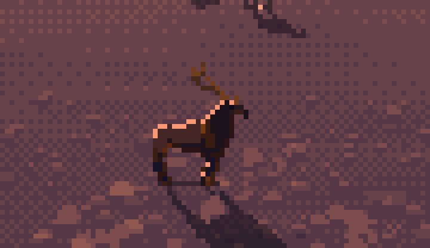

7. Herds, and putting animals into a painting
Back to the tutorial. Code: herd.py, context.py, anim.py in ~/work/pixelart-studies/elements/deer-elk/src/.
The naturalist's fourth thing that makes a 6-pixel elk read is "how it sits with the others: spacing, facing, file". A herd is a pattern before it's a set of animals, and at 100 m the pattern is all there is. This page is how I arranged herds from the naturalist's numbers, how the compositor paints them, and how I put animals into another student's painting for the image the studio liked best.
Arranging a herd from field numbers
From elk-and-deer.md and drawing-animals.md:
| fact | number | where it goes |
|---|---|---|
| Olympic herd composition, before the hunt | 43 calves and 24 bulls per 100 cows | composition(): ~27% calves, ~10% yearlings, a lead cow first |
| grazing spacing | 3–10 m, all roughly facing one way | Poisson-disc spread, heading ± 30° |
| calves | at a cow's flank | 1.4 m off a cow's side, facing her way |
| sentinels | 1–2 heads up | 10% alert |
| alarmed | bunch tightly, heads up facing the threat | 2–4 m, heading ± 12°, calves pulled to the middle |
| moving | single file on a trail: lead cow, cows and calves, yearlings dawdling | 3–6 m apart on a gentle S; yearlings at the back with bigger gaps |
| bedded | 2–5 m apart, heads in different directions | 80% lying, random headings |
| rut | a bull among his cows, a satellite bull 50–100 m off | one bull bugling, one alert bull 60 m away facing back |
if behaviour in ("graze", "rut"):
pts = _poisson(n, 3.0, 8.0, rng, spread=0.7) # 3-8 m apart, squashed across the heading
for i, ((sex, age), p) in enumerate(zip(comp, pts)):
h = heading + rng.normal(0, 30)
if age == "young" and adults:
# calves at a cow's flank
m = adults[rng.integers(len(adults))]
side = rng.choice([-1, 1]); hh = np.radians(m.heading)
p = np.array([m.x, m.y]) + 1.4 * side * np.array([-np.sin(hh), np.cos(hh)]) + rng.normal(0, 0.4, 2)
h = m.heading + rng.normal(0, 20)
r = rng.random()
if age == "young": g = "walk" if r < 0.3 else ("lie" if r < 0.45 else "graze")
elif r < 0.1: g = "alert" # sentinels
elif r < 0.25: g = "walk"
else: g = "graze"

fig. The layouts, top-down, in metres: grazing, alert, in file, bedded. Arrows are headings; red rings are heads up.
Blacktails get their own groups (deer_group): a doe with twins walking in line, a buck alone and alert, three bounding away.
The compositor
herd.scene(members, k, W, H, elev, hour, ...) paints each member with paint_index at its own size (1.62 × its H × k px, so calves are small and deer smaller), then places them in screen space. Two rules matter:
- Shadows first, all of them, then the bodies far to near. Otherwise a near animal's shadow draws over a far animal's legs.
- Let the cast shadow run in a herd. In a sheet cell I clamp each shadow to half a body length (a 5° sun at dusk otherwise throws it across the page); in a herd it can be three body lengths, and the long parallel shadows are half the picture at golden hour.
order = sorted(members, key=lambda m: -m.y) # far first
def place(m):
sx = (m.x - centre[0]) * k + W / 2
sy = H / 2 - (m.y - centre[1]) * np.sin(e) * k # e = camera elevation: 8 landscape, 30 iso
for m, (rgb, on, sh, origin) in zip(order, res): paste shadow
for m, (rgb, on, sh, origin) in zip(order, res): paste body

fig. A cow-calf herd grazing, iso 30°, 10 px/m (about 30 m away). Calves at their mothers' flanks, two sentinels head-up, all facing roughly one way.



fig. In file at 3 px/m; grazing at 1.6 px/m (about 300 m: a scatter of pale-rumped figures); fleeing at a trot, landscape view, 5 px/m.

A herd filing along a trail at golden hour (anim.py): each animal's gait phase advances with time, so the walk cycles run out of step, as real ones do.
Into a painting: the dusk gravel bar
For the context piece I picked the channel student's dusk gravel bar (elements/channel/out/s5_low_dusk_4x.png, read back at its native 256×144) because it's the naturalist's own late-September scene: "a big bull on a gravel bar of the North Fork above Lake Cushman at first light... Cows scattered in the alder flat behind him."
Three decisions made it work:
1. Read the scale off the painting. The gravel's stones shrink toward the far bank; I set px per metre as a linear function of the row, from about 1 at the far bank to 10 in front, and painted each animal at the scale of the row its hooves stand on. Haze (depth) grows toward the far bank too.
def k_at(y): # perspective read off the gravel: px per metre
return max(0.8, 1.0 + (y - 50) * 0.13)
depth = float(np.clip((80 - y) / 40, 0, 0.7))
2. Light them the way the painting is lit. The glow is behind them, so the sun is behind and low (azimuth 95°, 5° up): every figure is back-lit, dark with a rim in the sun's colour on the edges that face the sky (light). The far cows are below 10 px, so they're glyphs, and the glyph painter needed its own back-light rule; before that they were lit like noon.
3. The one in the water gets a broken mirror. The sprite flipped about its own ground row, mixed 72/28 with the water behind it (the lights drop, the water's tint comes in), with every fourth row (offset by column) handed back to the water as a dash. Only where the pixel below is water. No cast shadow on water.
gr = int(round(oy)) # the sprite's ground row
Ym = 2 * gr - ys + y0 + 1 # mirror about it
ok &= water[Ym, Xm]
refl = src * 0.72 + dst * 0.28
dash = ((Ym + (Xm // 3)) % 4) == 0
refl[dash] = dst[dash] * 0.85 + src[dash] * 0.15



nb086, then the final at 4× and the bull at 8×. In the first try the far cows are khaki blobs lit like noon and the rims are hide-coloured and dim. The bull began as a bugling bull, which at 6–8 px read as a dark lump with a stick on it (nb088), so he became an alert bull, standing nearer.
Most of what makes this image is the channel student's painting. What I added was the right figures, at the right scale for where they stand, lit the way the scene is lit, doing what elk do there in late September. That's the lesson I'd pass on about context: a figure belongs in a picture when it obeys the picture's light and perspective, not when it's painted better.
From the air
The aerial student's river valley at native 320×180: an elk is 1.3 px, so it's the dot tier, two pixels (pale rump, dark front), a shadow tick, never touching. The herd grazes by the river and a file walks up to it; the pattern of spacing and the file are what say "elk".

Where it stops
At 4 px/m in iso the cast shadows are bigger than the animals (physically right at a low sun, and it reads as clutter); a stylised shorter shadow might be better. The herd's grazing cows at 10 px/m in iso still read as a little sheep-like, because the head down merges with the forelegs from above. The compositor has no terrain: herds stand on a flat meadow, and a real slope would change the spacing (elk space out along contours) and the draw order.